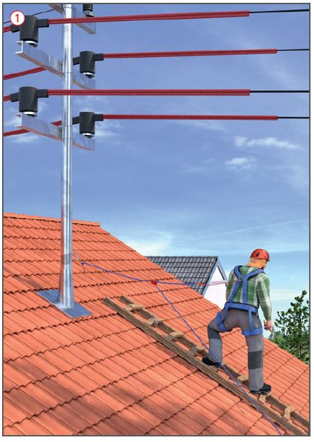
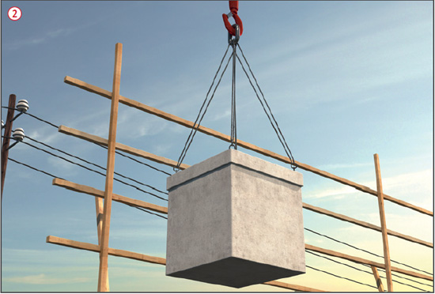
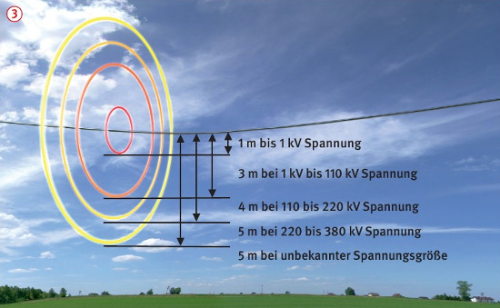

Arbeiten in der Nähe
elektrischer Freileitungen
|
|

Gefährdungen
- Das Berühren spannungsführender elektrischer Freileitungen kann tödliche Folgen haben.
- Auch bei normalerweise
schlecht leitenden Materialien
kann bei Nässe ein Stromüberschlag
erfolgen, z. B. beim
unvorsichtigen Schwenken von
nassen und feuchten Dachsparren bei deren Einbau.
Schutzmaßnahmen
- In der Nähe Spannung führender elektrischer Freileitungen nur arbeiten, wenn die Schutzabstände nicht unterschritten werden
 .
.
- Das Ausschwingen der
Leitungsseile bei Wind bei der Bemessung des Sicherheitsabstandes berücksichtigen.
- Können die Sicherheitsabstände zu elektrischen Freileitungen nicht eingehalten werden,
- muss deren spannungsfreier Zustand hergestellt und für die Dauer der Arbeiten sichergestellt sein oder
- müssen die Spannung führenden Teile durch Abdecken
 oder Abschranken
oder Abschranken  geschützt sein.
geschützt sein.
Abdeckungen stellen allerdings nur einen Schutz gegen zufälliges Berühren dar und ersetzen keine Betriebsisolierung.
- Sicherheitsmaßnahmen immer in Abstimmung mit dem Betreiber der Leitungen (z. B. Elektroversorgungsunternehmen, Deutsche Bahn) festlegen und durchführen.
- Dreh-, Höhen- oder Auslegerbegrenzungen an Maschinen vornehmen, wenn Gefahr besteht, die Freileitung mit Maschinen oder Geräten zu berühren.
- Bei Arbeiten mit
- Maschinen, z. B. Kranen, Baggern, Betonpumpen, Bauaufzügen, mechanischen Leitern,
- sperrigen Lasten an Hebezeugen, z. B. Bewehrungseisen, Schalungselementen, Fertigteilen,
- Einbauteilen, z. B. Stahlpfetten, Profilblechen
ist die Gefahr
der unzulässigen Annäherung
an Spannung führende
Freileitungen besonders bei
der Bemessung des Sicherheitsabstandes
zu berücksichtigen.
Die Schutzabstände dürfen durch örtliche Bedingungen
nicht unterschritten
werden.
- Vor Beginn der Arbeiten
- Erlaubnis zum Durchführen der
Arbeiten vom Anlagenverantwortlichen
einholen,
- Einweisung des Arbeitsverantwortlichen
für die Bauarbeiten
durch den Anlagenverantwortlichen
des Betreibers vor Ort,
- Beschäftigte durch den
Arbeitsverantwortlichen einweisen
und über die Gefahr
informieren.
- müssen den Beschäftigten die
Arbeitsgrenzen bekannt sein.
- Die Einweisung und die Erlaubnis
zum Durchführen der Arbeiten,
sowie die Festlegung der
Arbeitsgrenzen sollte dokumentiert
werden.
- Bei Abweichungen von der
geplanten Durchführung der Arbeiten
entscheidet der Anlagenverantwortliche
des Betreibers
der Freileitung.
- Bei der Schutzmaßnahme
"Schutz durch Abstand" muss
der Arbeitsverantwortliche mit
einer geeigneten Aufsicht für die
Einhaltung der Schutzabstände
sorgen.
- Die Unterweisung der Mitarbeiter,
als alleinige Maßnahme,
reicht nicht aus.
- Für Notfälle muss eine schnellstmögliche Ausschaltung möglich sein. Dafür notwendige Kontaktmöglichkeiten sind vor Beginn der Arbeiten zu vereinbaren.

Sicherheitsabstand von elektrischen Freileitungen

07/2021